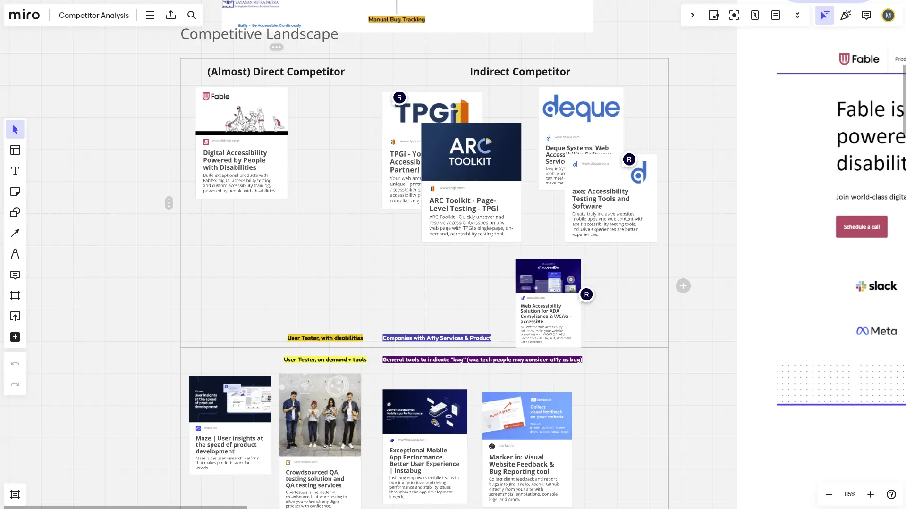
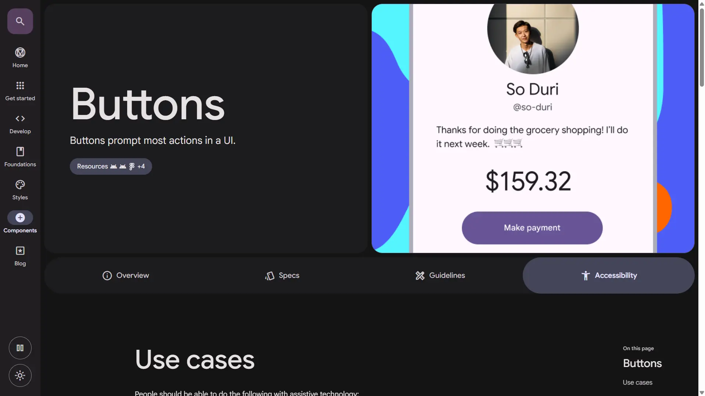
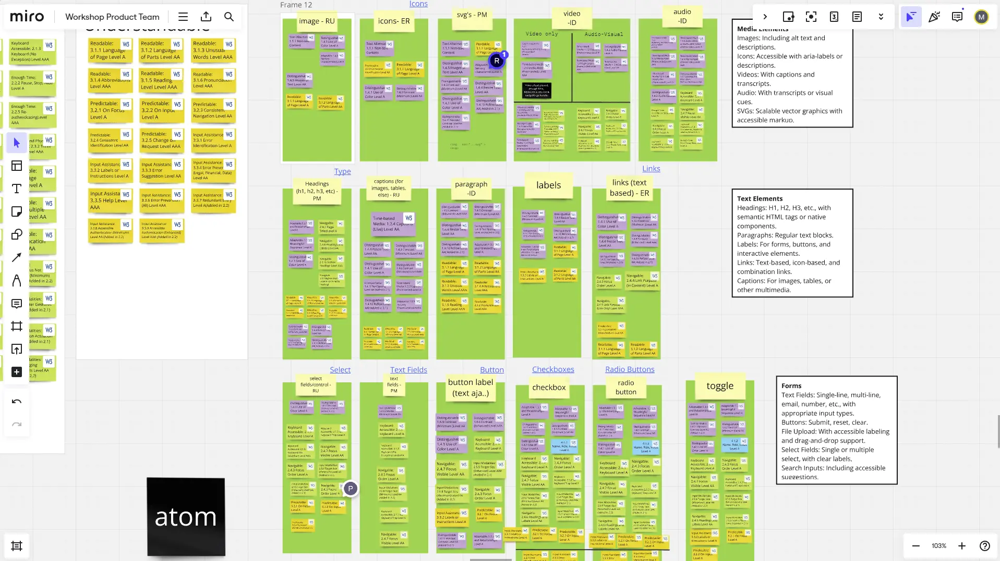
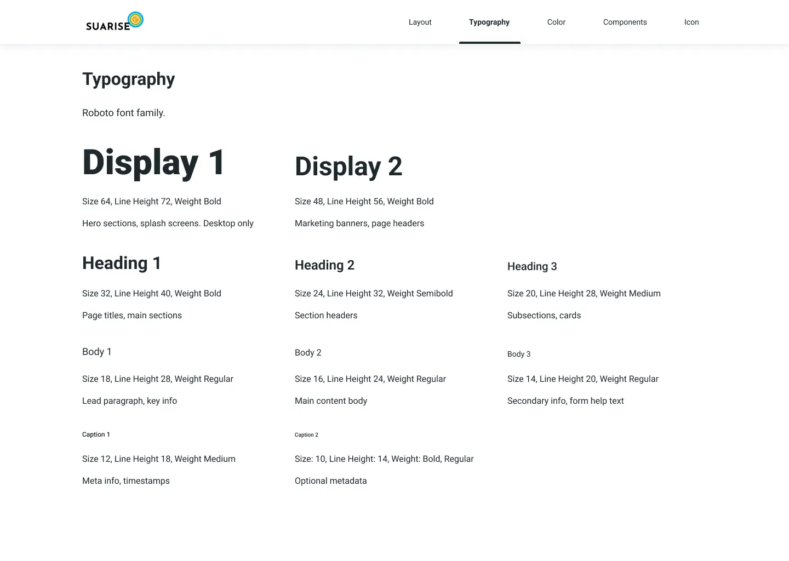
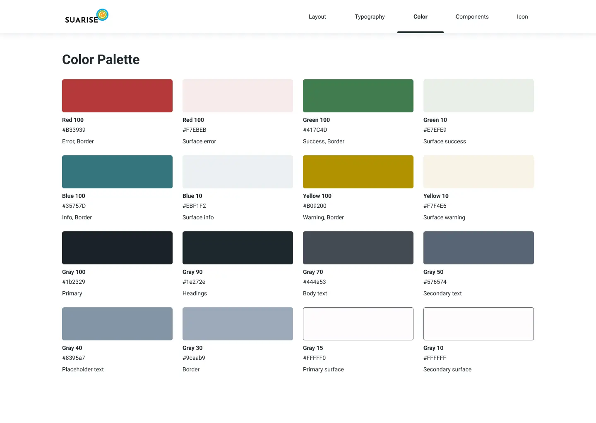
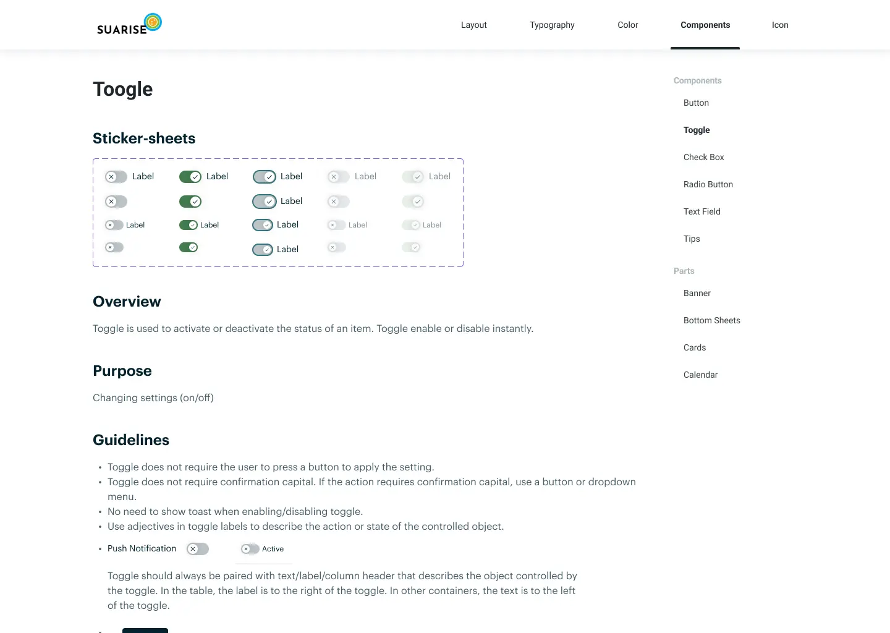
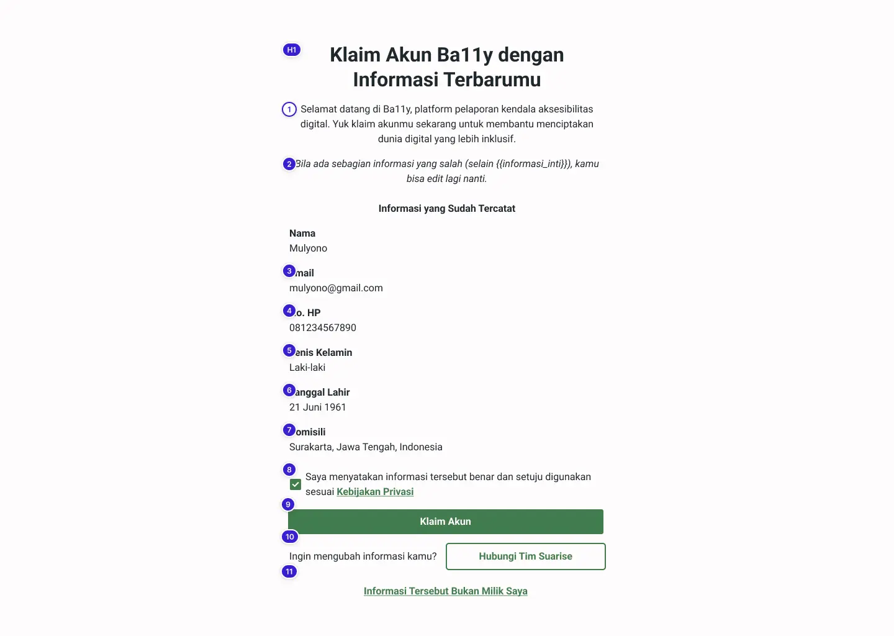

Building a WCAG-Compliant Design System for an Accessibility Platform from Scratch
Suarise needed an accessible foundation before anything could be built. I designed a complete system covering typography, color, icons, and 24 WCAG-compliant components, then tested the onboarding flow with users who have low to no vision.
Overview
The Short Version
Suarise is an Indonesian social enterprise building a platform where differently-abled users report accessibility issues on websites and apps, and developers learn how to fix them. The platform was being built from scratch, and an accessibility platform that is not itself accessible would be a contradiction, so WCAG compliance had to be the foundation, not an afterthought.
I studied existing accessibility tools and design systems, then built a complete system covering typography, color, icons, and 24 reusable components, all grounded in WCAG standards. We tested the sign-up and onboarding flows with users who have low to no vision, found usability issues no compliance checklist would have caught, and iterated until the flows worked.
My role
Sole UX designer (freelance), working with the Suarise director, a UX researcher, a UX writer, and frontend engineers. I handled research, accessibility standards, component design and documentation, and testing with differently-abled users.
Research
Research: Understanding the Space
Competitor analysis
Tools like ARC Toolkit and axe DevTools were built for developers, not everyday users. Since Suarise needed to serve non-developers too, I aimed for something approachable while still fully compliant.

Design systems research
I combined ideas from Material Design (scalability, contrast systems) and Apple's HIG (clarity, visual hierarchy) to create a system that felt modern while meeting accessibility requirements.

Design System
Building the Design System
Deciding on WCAG compliance levels
Before building anything, the team debated which WCAG criteria to target for each element type (buttons, toggles, form fields, etc.), since several criteria can apply to one element and not all mattered equally for our users. Blindly applying every rule would have made the system rigid; instead we chose deliberately where to be strict and where to be pragmatic.
Accessibility standards check
I audited the UI elements we would need against WCAG contrast and hierarchy criteria, and turned it into a checklist defining what each component had to meet.

Typography
A clear type hierarchy (Display, Heading, Body, Caption), each with size, line-height, weight, and usage guidelines.

Color
A contrast-safe palette with semantic colors and a gray scale; every combination verified against WCAG contrast ratios using Stark.

Icons
Simple icon shapes that stay readable at any size, important for low-vision users relying on magnification.
Components
I built 24 reusable components: buttons, toggles, checkboxes, text fields, banners, bottom sheets, cards, calendar elements, and more. Each included:
- Multiple states (default, hover, active, disabled, error)
- Focus states for keyboard navigation
- ARIA labels for screen reader compatibility
- Sticker sheets showing all variants
- Overview, purpose, and usage guidelines

Usability Testing
Testing with Differently-Abled Users
Engineers asked for real-world validation beyond compliance checklists, so we prototyped the sign-up and onboarding flow, a new user's first experience with the platform, and tested it with users who have low to no vision, recruited through the director's network in the disability community.
What we found
Testing revealed three issues no checklist would have caught:

What I changed
I worked with engineers to address each issue:
- Broke the onboarding into shorter, focused steps so each screen had fewer fields and less content.
- Simplified the layout and improved navigation between steps.
- Fixed ARIA labeling so screen readers could correctly read every form field and its purpose.
After implementing the changes, users completed the sign-up flow faster and made fewer mistakes.
Result
The Result
Suarise got an accessible foundation to build on: standardized typography, colors, icons, and 24 documented components that engineers could implement consistently without consulting me on every detail.
Reflection
Reflection
What went well
- Testing with real low-to-no-vision users revealed problems no WCAG checklist would have. Accessibility is whether real people can use the product, not just meeting criteria.
- Debating compliance levels per element gave us a system that was genuinely accessible without being rigid.
- Starting from scratch meant no legacy baggage, far easier than retrofitting accessibility onto an existing system.
What I would do differently
- Test accessibility earlierWe built most components before testing; rough-prototype testing would have caught the label and layout issues sooner.
- Tighten the design–engineering loopSome issues only appeared in code, since screen readers interpret HTML differently from a Figma prototype.
- Add deeper accessibility annotationsNotes on keyboard navigation, focus order, and screen reader behavior per component would have made handoff even smoother.
Process